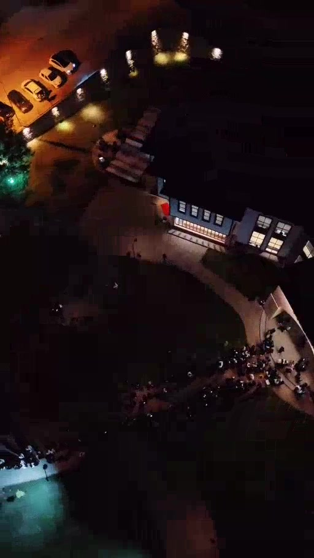

CONCERT FILM · 2026
Dedublüman
Sahnenin ışığını, yakın planları ve performans enerjisini dikey sosyal medya kurgusuna dönüştüren konser filmi.
Concert FilmVertical ReelsEditingSocial Content
SESSİZ ÖNİZLEME · 10 SN
Atmosfer ve ritim.
Sahnenin ışığını, yakın planları ve performans enerjisini dikey sosyal medya kurgusuna dönüştüren konser filmi.
Concert FilmVertical ReelsEditingSocial Content
THE EDIT
Ritme göre
kurgu.
Kısa önizleme; yakın plan, sahne, seyirci ve ışık geçişlerinin ritmini gösteriyor.

PROJE / ETKİNLİK
Benzer bir iş
konuşalım.
Etkinliğin tarihini, lokasyonunu ve ihtiyacını paylaş; projeye en doğru üretim planını birlikte oluşturalım.
Projeyi Konuşalım ↗